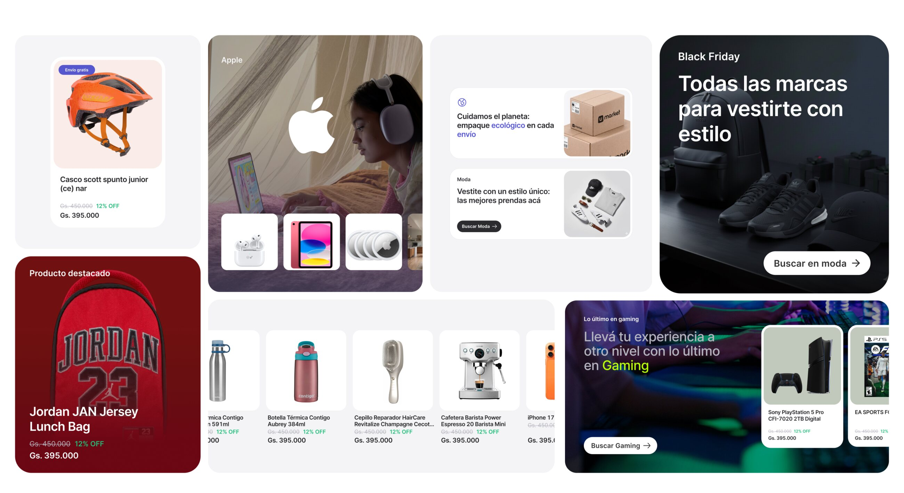
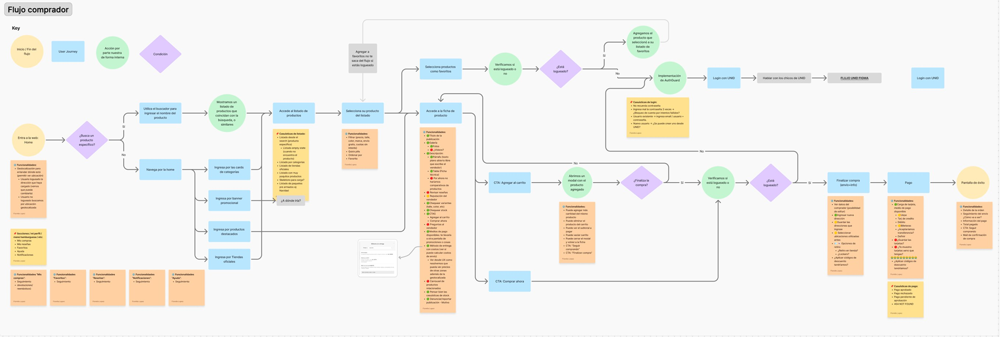
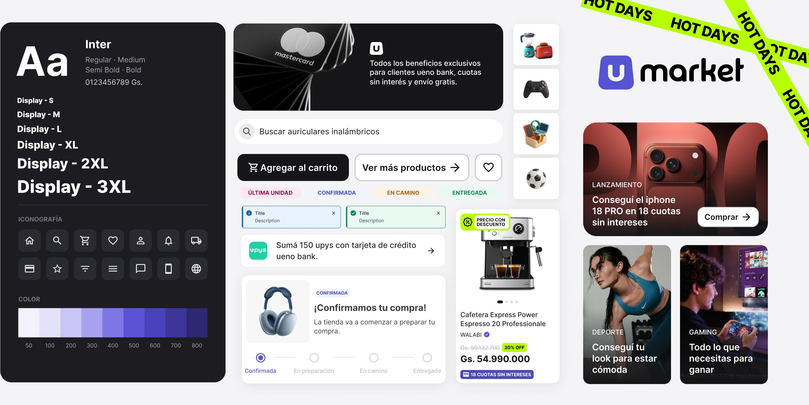
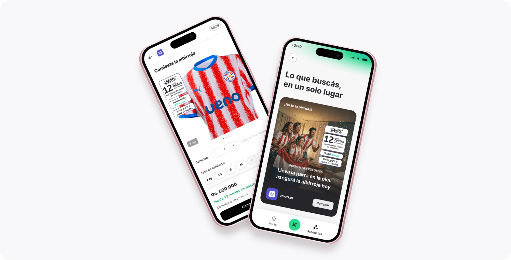
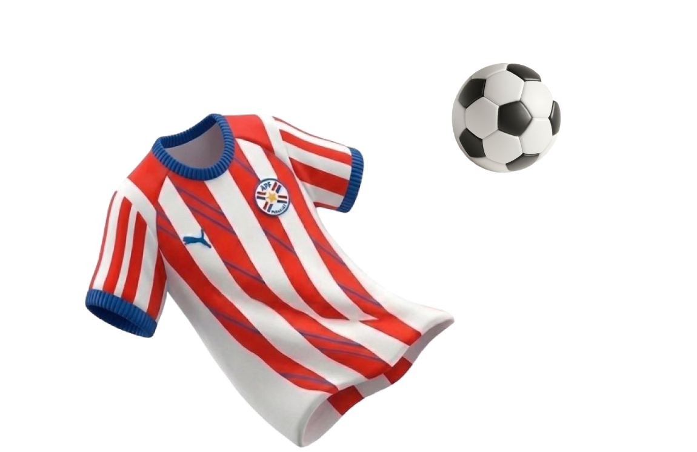
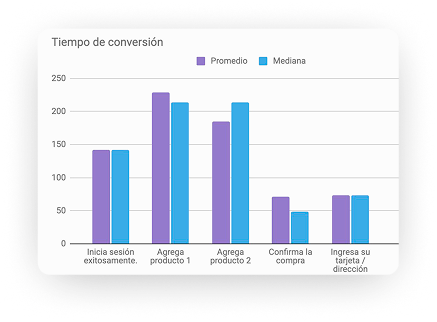

Case study · 2026
umarket
About the projectSobre el proyecto
A new e-commerce platform built into the financial ecosystem of ueno bank (Paraguay). It combines a product catalogue with exclusive benefits for its customers, the bank's own payment methods and special financing options, connecting the shopping experience with ueno's financial services.
Desarrollo de una nueva plataforma de ecommerce integrada al ecosistema financiero del banco ueno bank (Paraguay). Combina un catálogo de productos con beneficios exclusivos para sus clientes, medios de pago propios y opciones de financiación especiales, conectando la experiencia de compra con los servicios financieros de ueno.

A challenge with more questions than answersUn desafío con más preguntas que respuestas
We had to build an e-commerce from scratch: in just six weeks, in a market where we had little information and needed to match the competition.
Necesitábamos desarrollar un e-commerce desde cero: en solo seis semanas, en un mercado donde teníamos poca información y necesitábamos ponernos a la altura de la competencia.
→ We didn't wait for every certainty before we started learning.No esperamos a tener todas las certezas para empezar a aprender.
Understand enough to move forwardEntender lo suficiente para avanzar
With little time to research and many decisions to make, the challenge was to define an MVP that would get us to production without losing sight of the shopping experience.
Con poco tiempo para investigar y muchas decisiones por tomar, el desafío era definir un MVP que nos permitiera llegar a producción sin perder de vista la experiencia de compra.
We started with desk research to understand our competitors and the purchase drivers in Asunción:
Empezamos por una investigación de escritorio que nos permitiera entender a nuestra competencia y drivers de compra en Asunción:
E-commerce landscapePanorama del e-commerce
adults in Paraguay already shop online*
adultos en Paraguay ya compran por internet*
E-commerce volume (millions of dollars)*
Volumen del comercio electrónico (millones de dólares)*
Estimated annual growth 2024–2027 (CAGR), up to US$1.5 billion*
Crecimiento anual estimado 2024–2027 (CAGR), hasta US$1,5 mil millones*
A significant share happened in foreign stores, driven by better prices and promotions. This was an opportunity to offer a more competitive local alternative.
Una parte significativa se realizaba en tiendas del exterior, impulsada por mejores precios y promociones. Esto representaba una oportunidad para ofrecer una alternativa local más competitiva.
Payment methodsMedios de pago
Debit and credit cards
Tarjetas de débito y crédito
Bank transfers
Transferencias bancarias
Others (cash on delivery, gift cards, etc.)
Otros (pagos contra entrega, giftcards, etc)
Digital wallet (+80% is PayPal)
Billetera digital (+80% es Paypal)
Cash
Efectivo
We could capture it with ueno products
Podríamos capturarlo con productos ueno
Shopping channels and devicesCanales y dispositivos para la compra
- 81%Mobile
- 19%Desktop
Website
Sitio web
Social media
Redes sociales
Top categoriesCategorías destacadas
Food and beverages
Alimentos y bebidas
Appliances and air conditioning
Electros y aires acondicionados
Non-sports apparel and Electronics, Audio and Video are categories with a large share of purchases, but they usually go to international stores.
Indumentaria no deportiva y Electrónica, Audio y Video son categorías con gran proporción de compra, pero que en general se canalizan en compras internacionales.
*PCMI (2024). Global E-commerce Data Library. According to PCMI, e-commerce in Paraguay will grow at a 28% CAGR between 2024 and 2027 to reach US$1.5 billion.*PCMI (2024). Global E-commerce Data Library. Según datos de PCMI, el comercio electrónico en Paraguay crecerá a un CAGR del 28% entre 2024 y 2027 hasta alcanzar US$1,5 mil millones.
Build, validate and learn on the moveConstruir, validar y aprender en movimiento
After the exploratory research, I ran an alignment workshop with the Head of Product, the VP of Engineering and the Senior Design Manager to set expectations, align goals and agree on the e-commerce we wanted to build.
A partir del research exploratorio, organicé un workshop de alineación junto a la Head of Product, el VP of Engineering y el Senior Design Manager para definir expectativas, alinear objetivos y acordar qué e-commerce queríamos construir.
→ With that shared vision, I created a functional flow diagram detailing every section of the product, identifying features, dependencies, technical constraints, states and possible scenarios.
→ Con esa visión compartida, desarrollé un diagrama de flujo funcional donde bajé en detalle cada sección del producto, identificando funcionalidades, dependencias, limitaciones técnicas, estados y posibles escenarios.
→ Then I validated this definition with the Engineering Manager and the Product Manager, adjusting the scope to technical feasibility and business priorities.
→ Luego validé esta definición junto al Engineering Manager y el Product Manager, ajustando el alcance según la viabilidad técnica y las prioridades del negocio.
→ With the definitions aligned, together we built a roadmap with deliverables and deadlines to launch in six weeks.
→ Con las definiciones alineadas, construimos en conjunto un roadmap con entregables y deadlines para llegar al lanzamiento en seis semanas.

Building a small Design SystemArmado de un pequeño Design System
This was the beginning of something big, and we designed it that way from day one. I built a lightweight Design System with the essentials to move fast, meant as a foundation to scale with the product.
Esto era el comienzo de algo grande, y lo diseñamos así desde el día uno. Armé un Design System liviano con lo esencial para avanzar rápido, pensado como base para escalar junto al producto.

The World Cup came early and we went out to playEl mundial se nos adelantó y salimos a jugar
A month before the official launch of umarket, an opportunity came up to sell the official jerseys of the Paraguay national team for the World Cup.
Un mes antes del lanzamiento oficial de uMarket, surgió la oportunidad de comercializar las camisetas oficiales de la Selección Paraguaya para el Mundial.
We used the initiative to build a simplified purchase flow inside the bank app, which let us try the experience and validate hypotheses in a real context.
Aprovechamos la iniciativa para implementar un flujo de compra simplificado dentro de la app del banco, que nos permitió probar la experiencia y validar hipótesis en un contexto real.


People activated their ueno credit card with the purchase
Personas activaron su tarjeta de crédito ueno con la compra
Purchase volume. Total sales generated
Volumen de compra. Venta total generada
of sales were made online
de las ventas se vendieron de forma online
Units sold
De unidades vendidas
From the jersey success to validating umarket:Del éxito de Camisetas a la validación de uMarket:
We carried over the learnings and tested the proposal.Trasladamos aprendizajes y testeamos la propuesta.
While we prepared the launch, we started testing. The learnings fed new iterations that we were already preparing in parallel.
Mientras preparábamos el lanzamiento, comenzamos a testear. Los aprendizajes alimentaban nuevas iteraciones que ya estábamos preparando en paralelo.
- → HypothesesHipótesis
- → Conversion by tasks and subtasksConversión por tareas y subtareas
- → Conversion timesTiempos de conversión
- → Usability issuesProblemas de usabilidad

ResultResultado
In a very short time we had a product in production.
We turned an uncertain scenario into a working e-commerce, with a reusable design foundation and a continuous improvement process that kept the experience evolving after launch.
En muy poco tiempo logramos tener un producto en producción.
Transformamos un escenario de incertidumbre en un e-commerce funcional, con una base de diseño reutilizable y un proceso de mejora continua que permitió seguir evolucionando la experiencia después del lanzamiento.
Some goals reached after months in production:Algunas de las metas conseguidas tras meses en producción:
Active SKUs
SKUs activos
Monthly orders
Órdenes mensuales
Conversion on the home page
De conversión en la home
ConclusionsConclusiones
The biggest lesson from umarket was understanding that, with high uncertainty and tight timelines, a linear process isn't always possible. We had to adapt, make decisions with the information available and work collaboratively to move forward without losing sight of the experience.
El mayor aprendizaje de uMarket fue entender que, en contextos de alta incertidumbre y tiempos acotados, no siempre es posible seguir un proceso lineal. Tuvimos que adaptarnos, tomar decisiones con la información disponible y trabajar de manera colaborativa para avanzar sin perder de vista la experiencia.
Define while we designed.
Design while we built.
Validate while we iterated.Definir mientras diseñábamos.
Diseñar mientras construíamos.
Validar mientras iterábamos.